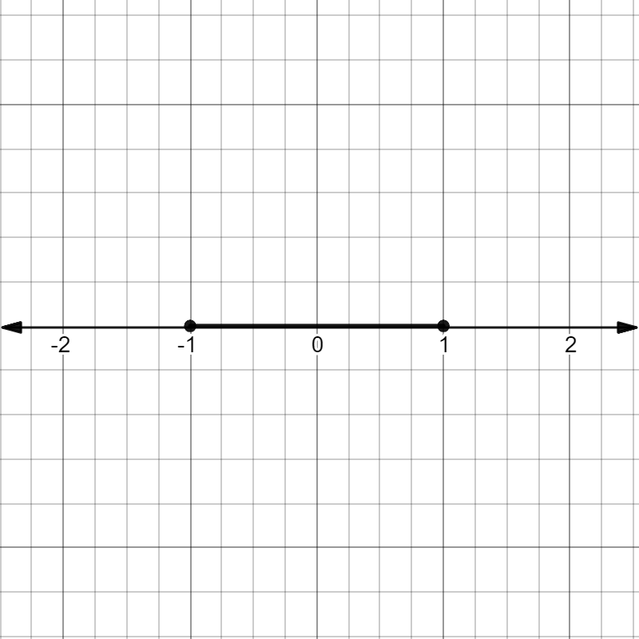

Absolute Values
1. Absolute vs. Regular
Absolute values are numbers that calculate a digit's distance from zero. It tells you whether the digit is 1 unit, 2 unit, or x-number of units away from 0. Because it tells you distance and not amount or direction (i.e. positive or negative, left or right), absolute values are never negative.
For example, in this number line the distance from 0 to 1 and 0 to -1 is both |1|. Both points are |1| unit away from 0, regardless of direction.
Absolute values are those within two bars; |x| is an example of an absolute value.
2. Calculations
The bars of absolute values are not parentheses. The final result of any expression within the two || is first switched to positive and then can be integrated with the rest of the equation.
Remember that || are not parentheses; you can't have it so -|-x| = |x| because you cancelled out the two negatives. First you do the equation in the lines, then solve.
|-x| = +x.
-|-x|
= -(x)
= -x